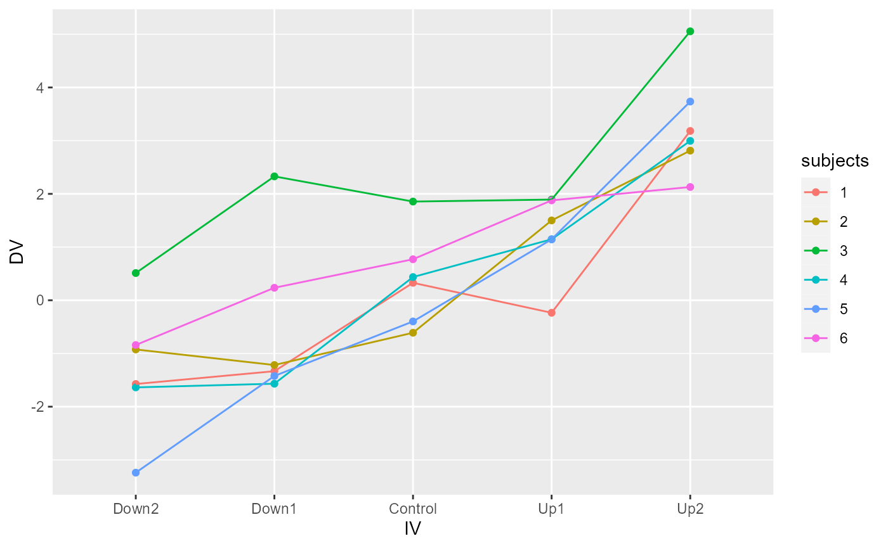

Lab9_RMAnova
Lab9_RMAnova.RmdGeneralization Assignment
Perhaps unfortunately, this whole assignment was completed with the help of the solutions video. Everything felt intuitive and much was learned from this assignment. However, there were numerous moments where I felt clueless on what specifically to do or what format to use. I watched the entire video closely and made sure I understood everything in retrospect. Admittedly, in terms of the 0-100% struggle-report, this whole assignment was likely a 0%.
1. Create an R script that can generate simulated data for the following repeated measures design. (2 points)
A. The dependent variable is assumed to come from a normal distribution with mean = 0 and standard deviation = 1.
B. There is one repeated measures factor with 5 levels (Down1, Down2, Control, Up1, Up2). The control group is assumed to have no effect. The Down1 and Down2 levels shift the mean down by 1 and 2 standard deviations, respectively. The Up1 and Up2 levels shift the mean up by 1 and 2 standard deviations, respectively.
C. There are 6 subjects in the experiment, and they are each measured once in each condition. The 6 subjects are assumed to be different from one another (e.g., they will have different baseline means in the control condition), but they will all be influenced by the IV in the exact same way (e.g., no interaction).
library(dplyr)
#> Warning: package 'dplyr' was built under R version 4.1.3
#>
#> Attaching package: 'dplyr'
#> The following objects are masked from 'package:stats':
#>
#> filter, lag
#> The following objects are masked from 'package:base':
#>
#> intersect, setdiff, setequal, union
library(tibble)
#> Warning: package 'tibble' was built under R version 4.1.3
library(ggplot2)
#> Warning: package 'ggplot2' was built under R version 4.1.3
sim_data <- tibble(
subjects = rep(1:6, each = 5),
IV = rep(c("Down2", "Down1", "Control", "Up1", "Up2"), 6),
DV = rnorm(6*5, c(-2, -1, 0, 1, 2), 1)
) %>%
mutate(DV = DV+rep(rnorm(6, 0, 1), each = 5))
sim_data$IV <- factor(sim_data$IV, levels = c("Down2", "Down1", "Control", "Up1", "Up2"))
sim_data$subjects <- as.factor(sim_data$subjects)
ggplot(sim_data, aes(x = IV, y = DV, group = subjects,
color = subjects))+
geom_point()+
geom_line()
2. Run a simulation to determine the proportion of experiments that would return a significant result for the above design. Assume that the effect of the levels of the IV are increments of .1 of a standard deviation, rather than increments of 1 as in the above design.
save_p <- c()
for(i in 1000){
sim_data <- tibble(
subjects = rep(1:6, each = 5),
IV = rep(c("Down2", "Down1", "Control", "Up1", "Up2"), 6),
DV = rnorm(6*5, c(-0.2, -0.1, 0, 0.1, 0.2), 1)
) %>%
mutate(DV = DV+rep(rnorm(6, 0, 1), each = 5))
sim_data$IV <- factor(sim_data$IV, levels = c("Down2", "Down1", "Control", "Up1", "Up2"))
sim_data$subjects <- as.factor(sim_data$subjects)
aov_out <- summary(aov(DV ~ IV + Error(subjects), sim_data))
save_p[i] <- aov_out[2]$`Error: Within`[[1]]$`Pr(>F)`[1]
}
length(save_p[save_p < 0.05])/1000
#> [1] 0.999
### I'm not really sure what's going on here. I ended up frustratingly copying this *exactly* from your solutions video, and for some reason all of the P-Values are coming out as null values. 3. Demonstrate that the Godden and Baddeley example data from the textbook (19.5), which used a 2x2 repeated measures design, can be be analyzed with one-sample t-tests to return the same results. Specifically, show the one-sample t-tests for each main effect and the interaction. (2 points)
godden_baddeley <- tribble(~Subjects, ~LearningPlace, ~TestingPlace, ~Recall,
"s1", "On Land", "On Land", 34,
"s2", "On Land", "On Land", 37,
"s3", "On Land", "On Land", 27,
"s4", "On Land", "On Land", 43,
"s5", "On Land", "On Land", 44,
"s1", "On Land", "Under Sea", 18,
"s2", "On Land", "Under Sea", 21,
"s3", "On Land", "Under Sea", 25,
"s4", "On Land", "Under Sea", 37,
"s5", "On Land", "Under Sea", 34,
"s1", "Under Sea", "On Land", 14,
"s2", "Under Sea", "On Land", 21,
"s3", "Under Sea", "On Land", 31,
"s4", "Under Sea", "On Land", 27,
"s5", "Under Sea", "On Land", 32,
"s1", "Under Sea", "Under Sea", 22,
"s2", "Under Sea", "Under Sea", 25,
"s3", "Under Sea", "Under Sea", 33,
"s4", "Under Sea", "Under Sea", 33,
"s5", "Under Sea", "Under Sea", 42
)
godden_baddeley <- godden_baddeley %>%
mutate(Subjects = as.factor(Subjects),
LearningPlace = as.factor(LearningPlace),
TestingPlace = as.factor(TestingPlace))
aov_out <- aov(Recall ~ LearningPlace * TestingPlace +
Error(Subjects/(LearningPlace*TestingPlace)), godden_baddeley)
summary(aov_out)
#>
#> Error: Subjects
#> Df Sum Sq Mean Sq F value Pr(>F)
#> Residuals 4 680 170
#>
#> Error: Subjects:LearningPlace
#> Df Sum Sq Mean Sq F value Pr(>F)
#> LearningPlace 1 80 80 2 0.23
#> Residuals 4 160 40
#>
#> Error: Subjects:TestingPlace
#> Df Sum Sq Mean Sq F value Pr(>F)
#> TestingPlace 1 20 20 2.5 0.189
#> Residuals 4 32 8
#>
#> Error: Subjects:LearningPlace:TestingPlace
#> Df Sum Sq Mean Sq F value Pr(>F)
#> LearningPlace:TestingPlace 1 320 320 20 0.0111 *
#> Residuals 4 64 16
#> ---
#> Signif. codes: 0 '***' 0.001 '**' 0.01 '*' 0.05 '.' 0.1 ' ' 1
ggplot(godden_baddeley, aes(x = TestingPlace,
y = Recall,
shape = LearningPlace,
group = LearningPlace))+
geom_point(stat = "summary", fun = "mean")+
geom_line(stat = "summary", fun = "mean")+
theme_classic(base_size = 12)Q3: But how would we do this using one-sample t-tests?
### For the main effect of learning place:
learning_place_means <- godden_baddeley %>%
group_by(Subjects, LearningPlace) %>%
summarize(mean_recall = mean(Recall))
#> `summarise()` has grouped output by 'Subjects'. You can override using the
#> `.groups` argument.
t.test(mean_recall ~ LearningPlace, paired = TRUE, data = learning_place_means)
#>
#> Paired t-test
#>
#> data: mean_recall by LearningPlace
#> t = 1.4142, df = 4, p-value = 0.2302
#> alternative hypothesis: true difference in means is not equal to 0
#> 95 percent confidence interval:
#> -3.852973 11.852973
#> sample estimates:
#> mean of the differences
#> 4
Learning_land <- learning_place_means %>%
filter(LearningPlace == "On Land")
Learning_sea <- learning_place_means %>%
filter(LearningPlace == "Under Sea")
t.test(Learning_land$mean_recall - Learning_sea$mean_recall, mu = 0)
#>
#> One Sample t-test
#>
#> data: Learning_land$mean_recall - Learning_sea$mean_recall
#> t = 1.4142, df = 4, p-value = 0.2302
#> alternative hypothesis: true mean is not equal to 0
#> 95 percent confidence interval:
#> -3.852973 11.852973
#> sample estimates:
#> mean of x
#> 4
### For the main effect of testing place:
testing_place_means <- godden_baddeley %>%
group_by(Subjects, TestingPlace) %>%
summarize(mean_recall = mean(Recall))
#> `summarise()` has grouped output by 'Subjects'. You can override using the
#> `.groups` argument.
t.test(mean_recall ~ TestingPlace, paired = TRUE, data = testing_place_means)
#>
#> Paired t-test
#>
#> data: mean_recall by TestingPlace
#> t = 1.5811, df = 4, p-value = 0.189
#> alternative hypothesis: true difference in means is not equal to 0
#> 95 percent confidence interval:
#> -1.511956 5.511956
#> sample estimates:
#> mean of the differences
#> 2
Testing_land <- testing_place_means %>%
filter(TestingPlace == "On Land")
Testing_sea <- testing_place_means %>%
filter(TestingPlace == "Under Sea")
t.test(Testing_land$mean_recall - Testing_sea$mean_recall, mu = 0)
#>
#> One Sample t-test
#>
#> data: Testing_land$mean_recall - Testing_sea$mean_recall
#> t = 1.5811, df = 4, p-value = 0.189
#> alternative hypothesis: true mean is not equal to 0
#> 95 percent confidence interval:
#> -1.511956 5.511956
#> sample estimates:
#> mean of x
#> 2
### For the interaction effect:
LL <- godden_baddeley %>%
filter(LearningPlace == "On Land",
TestingPlace == "On Land") %>%
pull(Recall)
LS <- godden_baddeley %>%
filter(LearningPlace == "On Land",
TestingPlace == "Under Sea") %>%
pull(Recall)
(LL - LS)
#> [1] 16 16 2 6 10
SL <- godden_baddeley %>%
filter(LearningPlace == "Under Sea",
TestingPlace == "On Land") %>%
pull(Recall)
SS <- godden_baddeley %>%
filter(LearningPlace == "Under Sea",
TestingPlace == "Under Sea") %>%
pull(Recall)
(SL - SS)
#> [1] -8 -4 -2 -6 -10
((LL - LS) - (SL - SS))
#> [1] 24 20 4 12 20
t.test((LL - LS) - (SL - SS), mu = 0)
#>
#> One Sample t-test
#>
#> data: (LL - LS) - (SL - SS)
#> t = 4.4721, df = 4, p-value = 0.01106
#> alternative hypothesis: true mean is not equal to 0
#> 95 percent confidence interval:
#> 6.066688 25.933312
#> sample estimates:
#> mean of x
#> 16
### I would've never thought this would be a way of running a one-sample T-Test on the interaction effect if it weren't for the solutions video...Bonus Points
These bonus questions are about the sphericity concept, and they will involve modifying the example data from the textbook (same as used in concept section 1).
1. Create a line plot showing how each of the 5 subjects perform across the levels of the IV. Discuss how the line plot visually shows the sphericity problem in the data (1 point)
sphericity <- tribble(~S, ~a1, ~a2, ~a3, ~a4,
"s1",76,64,34,26,
"s2",60,48,46,30,
"s3",58,34,32,28,
"s4",46,46,32,28,
"s5",30,18,36,28
)
library(tidyr)
sphericity <- pivot_longer(sphericity,
cols = !S,
names_to = "IV",
values_to = "DV")
ggplot(sphericity, aes(x = IV, y = DV, color = S, group = S))+
geom_point()+
geom_line()
### It is evident that there is a sphericity issue based on this ggplot, as the covariance across the levels of the independent variable are clearly different across the subjects. Based on the appearance of the plot, it would seem evident that there could be a main effect of "subject" as well as a clear interaction effect between subject and the independent variable. This clearly risks to obfuscate the meaning of the IV effects and yields a confound with the subject factor.
### Struggle-report: I needed the solution video's help for converting the data format into one subject to ggplot using tidyr, but I did not need the video to make the aforementioned conceptual interpretation once plotting the data.2. Modify the above data to remove the sphericity problem. Specifically, ensure that all subjects are different from another (there overall means are different), and that the IV has the same effect for each level and each subject (no interaction). Then, plot the new data and discuss how the graph shows the sphericity problem has been removed. (1 point)
sphericityFixed <- tribble(~S, ~a1, ~a2, ~a3, ~a4,
"s1",76,64,34,26,
"s2",60,48,18,10,
"s3",58,46,16,8,
"s4",46,34,4,-4,
"s5",30,18,-12,-20
)
library(tidyr)
sphericityFixed <- pivot_longer(sphericityFixed,
cols = !S,
names_to = "IV",
values_to = "DV")
ggplot(sphericityFixed, aes(x = IV, y = DV, color = S, group = S))+
geom_point()+
geom_line()
### Struggle-report: I seriously tried to figure this one out on my own, and thought I was onto something but ended up making it go way deeper (and more confusing) than I intended. Checking the solutions video, I really did not expect you to just be changing the raw data values themselves!! I assumed that this would involve some kind of transformation. 3. Calculate the Greenhouse-Geisser estimate of epsilon for your modified data to demonstrate you have removed the sphericity problem. (1 point)
sphericityFixed <- tribble(~S, ~a1, ~a2, ~a3, ~a4,
"s1",76,64,34,26,
"s2",60,48,18,10,
"s3",58,46,16,8,
"s4",46,34,4,-4,
"s5",30,18,-12,-20
)
sphericityFixed[,2:5]
#> # A tibble: 5 x 4
#> a1 a2 a3 a4
#> <dbl> <dbl> <dbl> <dbl>
#> 1 76 64 34 26
#> 2 60 48 18 10
#> 3 58 46 16 8
#> 4 46 34 4 -4
#> 5 30 18 -12 -20
cov_matrix <- cov(sphericityFixed[,2:5])
col_mean_matrix <- cov_matrix*0 + colMeans(cov_matrix)
row_mean_matrix <- t(cov_matrix*0 + rowMeans(cov_matrix))
dc_matrix <- cov_matrix - col_mean_matrix - row_mean_matrix + mean(cov_matrix)
### Greenhaus-Geisser correction time:
### sum(diag(dc_matrix))^2 / ((dim(dc_matrix)[1]-1)*sum(dc_matrix^2))
cor(sphericityFixed[,2:5])
#> a1 a2 a3 a4
#> a1 1 1 1 1
#> a2 1 1 1 1
#> a3 1 1 1 1
#> a4 1 1 1 1
### Perfectly correlated covariances. The sphericity problem is apparently fixed.It was only after consulting the solutions video for a later question that I realized that the method depicted below, which was gone over in class, is pretty different from that in the video to the extent that I got a bit bewildered and confused. While all of this intuitively makes sense to me and I’m learning along with it, there are many points here where I’d feel completely lost and confused if not for the solutions video. Therefore, I’m afraid I’ll have to just consider myself a “0%†on the struggle-report for this whole assignment. But the procedures that we went over in class remain below.
Q1
make_one_subject_data <- function(){
subject_control <- rnorm(6, 0, 1)
subnum <- 1
subject_baseline <- rnorm(1, 0, 1)
control <- rnorm(1, subject_baseline, 1)
down1 <- rnorm(n = 1,
mean = subject_baseline-1,
sd = 1)
down2 <- rnorm(n = 1,
mean = subject_baseline-2,
sd = 1)
up1 <- rnorm(n = 1,
mean = subject_baseline+1,
sd = 1)
up2 <- rnorm(n = 1,
mean = subject_baseline+2,
sd = 1)
}
make_one_subject_data()A More Generalized Function
one_factor_rm_sim <- function(nsubs, level_names, level_means, level_sds){
sim_data <- data.frame(subject = as.factor(rep(1:nsubs, each = length(level_names) )),
IV = as.factor(rep(level_names, nsubs)),
DV = rnorm(n = nsubs*length(level_names),
mean = level_means,
sd = level_sds)
)
return(sim_data)
}
a <- one_factor_rm_sim(nsubs = 6,
level_names = c("Down2", "Down1", "Control", "Up1", "Up2"),
level_means = c(-2, -1, 0, 1, 2),
level_sds = 1)
rnorm(n = 5, mean = c(-2, -1, 0, 1, 2), sd = 1)
#> [1] -3.5574538 -1.1462591 0.5776767 1.0394796 1.3007571Applying these function principles for the assignment
one_factor_rm_sim <- function(nsubs,
level_names,
level_means,
level_sds,
subject_means,
subject_sds){
shift_factor <- rnorm(n = nsubs*length(level_names),
mean = subject_means,
sd = subject_sds)
shift_factor <- c(sapply(X = subject_means, FUN = function(x) {rnorm(n = length(level_names), mean = x, sd = subject_sds)} ))
sim_data <- data.frame(subect = as.factor(rep(1:nsubs, each = length(level_names) )),
IV = as.factor(rep(level_names, nsubs)),
DV = rnorm(n = nsubs*length(level_names),
mean = level_means,
sd = level_sds) + shift_factor
)
return(sim_data)
}
### It is after this point that my record from our in-class coverage of this assignment finished, and I ended up getting totally lost and needing to check the solutions video.
### The all-encompassing struggle-report: Anything before this point is N/A, as I followed it along with our in-class coverage, and everything after this is at best a 20% on how much I needed to consult the video. This all intuitively makes sense to me and I learned through this exercise, however- as far as the generalization assignment goes- there were numerous points from question C and onwards that I really just would not have known what functions to use or create. Follow-along with in-class examples
library(tibble)
library(tidyr)
library(dplyr)
e1 <- tribble(~Subject, ~Drug_A, ~Placebo, ~Drug_B,
"s1", 124, 108, 104,
"s2", 105, 107, 100,
"s3",107,90,100,
"s4",109,89,93,
"s5",94,105,89,
"s6",121,71,84)
e1 <- pivot_longer(e1,
cols = !Subject,
names_to = "IV",
values_to = "Latency")
e1 <- e1 %>%
mutate(Subject = as.factor(Subject),
IV = as.factor(IV))
aov_out <- aov(Latency ~ IV + Error(Subject), data=e1)
summary(aov_out)
#>
#> Error: Subject
#> Df Sum Sq Mean Sq F value Pr(>F)
#> Residuals 5 750 150
#>
#> Error: Within
#> Df Sum Sq Mean Sq F value Pr(>F)
#> IV 2 900 450 3.75 0.0609 .
#> Residuals 10 1200 120
#> ---
#> Signif. codes: 0 '***' 0.001 '**' 0.01 '*' 0.05 '.' 0.1 ' ' 1
e2 <- tribble(~Subject, ~r1, ~r2, ~r3, ~r4, ~r5, ~r6,
"s1",30,18,21,15,18,12,
"s2",21,23,16,17,13,12,
"s3",19,21,13,15,13,9,
"s4",19,19,16,9,11,10,
"s5",21,16,12,15,9,11,
"s6",22,17,14,12,10,9,
"s7",19,20,17,10,13,5,
"s8",17,18,11,11,9,12
)
e2 <- pivot_longer(e2,cols = !Subject,
names_to = "Rank",
values_to = "Recall")
e2 <- e2 %>%
mutate(Subject = as.factor(Subject),
Rank = as.factor(Rank))
aov_out <- aov(Recall ~ Rank + Error(Subject), data= e2)
summary(aov_out)
#>
#> Error: Subject
#> Df Sum Sq Mean Sq F value Pr(>F)
#> Residuals 7 168 24
#>
#> Error: Within
#> Df Sum Sq Mean Sq F value Pr(>F)
#> Rank 5 720 144 24 2.09e-10 ***
#> Residuals 35 210 6
#> ---
#> Signif. codes: 0 '***' 0.001 '**' 0.01 '*' 0.05 '.' 0.1 ' ' 1
godden_baddeley <- tribble(~Subjects,~LearningPlace,~TestingPlace,~Recall,
"s1","On Land","On Land",34,
"s2","On Land","On Land",37,
"s3","On Land","On Land",27,
"s4","On Land","On Land",43,
"s5","On Land","On Land",44,
"s1","On Land","Under Sea",18,
"s2","On Land","Under Sea",21,
"s3","On Land","Under Sea",25,
"s4","On Land","Under Sea",37,
"s5","On Land","Under Sea",34,
"s1","Under Sea","On Land",14,
"s2","Under Sea","On Land",21,
"s3","Under Sea","On Land",31,
"s4","Under Sea","On Land",27,
"s5","Under Sea","On Land",32,
"s1","Under Sea","Under Sea",22,
"s2","Under Sea","Under Sea",25,
"s3","Under Sea","Under Sea",33,
"s4","Under Sea","Under Sea",33,
"s5","Under Sea","Under Sea",42
)
godden_baddeley <- godden_baddeley %>%
mutate(Subjects = as.factor(Subjects),
LearningPlace = as.factor(LearningPlace),
TestingPlace = as.factor(TestingPlace))
aov_out <- aov(Recall ~ LearningPlace*TestingPlace + Error(Subjects/(LearningPlace*TestingPlace)), godden_baddeley)
summary(aov_out)
#>
#> Error: Subjects
#> Df Sum Sq Mean Sq F value Pr(>F)
#> Residuals 4 680 170
#>
#> Error: Subjects:LearningPlace
#> Df Sum Sq Mean Sq F value Pr(>F)
#> LearningPlace 1 80 80 2 0.23
#> Residuals 4 160 40
#>
#> Error: Subjects:TestingPlace
#> Df Sum Sq Mean Sq F value Pr(>F)
#> TestingPlace 1 20 20 2.5 0.189
#> Residuals 4 32 8
#>
#> Error: Subjects:LearningPlace:TestingPlace
#> Df Sum Sq Mean Sq F value Pr(>F)
#> LearningPlace:TestingPlace 1 320 320 20 0.0111 *
#> Residuals 4 64 16
#> ---
#> Signif. codes: 0 '***' 0.001 '**' 0.01 '*' 0.05 '.' 0.1 ' ' 1
library(ggplot2)
ggplot(godden_baddeley, aes(x=TestingPlace,
y=Recall,
shape=LearningPlace,
group=LearningPlace))+
geom_point(stat="summary",fun="mean")+
geom_line(stat="summary",fun="mean")+
theme_classic(base_size=12)
### Re. Sphericity
textbook <- tribble(~S, ~a1, ~a2, ~a3, ~a4,
"s1",76,64,34,26,
"s2",60,48,46,30,
"s3",58,34,32,28,
"s4",46,46,32,28,
"s5",30,18,36,28
)
textbook[,2:5]
#> # A tibble: 5 x 4
#> a1 a2 a3 a4
#> <dbl> <dbl> <dbl> <dbl>
#> 1 76 64 34 26
#> 2 60 48 46 30
#> 3 58 34 32 28
#> 4 46 46 32 28
#> 5 30 18 36 28
cov(textbook[,2:5])
#> a1 a2 a3 a4
#> a1 294 258 8 -8
#> a2 258 294 8 -8
#> a3 8 8 34 6
#> a4 -8 -8 6 2
colMeans(cov(textbook[,2:5]))
#> a1 a2 a3 a4
#> 138 138 14 -2
colMeans(cov(textbook[,2:5])) - mean(cov(textbook[,2:5]))
#> a1 a2 a3 a4
#> 66 66 -58 -74
cov_matrix <- cov(textbook[,2:5])
col_mean_matrix <- cov_matrix*0 + colMeans(cov_matrix)
row_mean_matrix <- t(cov_matrix*0 + rowMeans(cov_matrix))
dc_matrix <- cov_matrix - col_mean_matrix -row_mean_matrix + mean(cov_matrix)
sum(diag(dc_matrix))^2 / ((dim(dc_matrix)[1]-1)*sum(dc_matrix^2))
#> [1] 0.4459613
textbook <- tribble(~S, ~a1, ~a2, ~a3, ~a4,
"s1",76,64,34,26,
"s2",60,48,46,30,
"s3",58,34,32,28,
"s4",46,46,32,28,
"s5",30,18,36,28
)
wide_data <- as.matrix(textbook[1:5,2:5])
aov_model <- lm(wide_data ~1)
rm_factor <- factor(c('a1','a2','a3','a4'))
library(car)
#> Warning: package 'car' was built under R version 4.1.3
#> Loading required package: carData
#>
#> Attaching package: 'car'
#> The following object is masked from 'package:dplyr':
#>
#> recode
new_anova <- Anova(aov_model,
idata=data.frame(rm_factor),
idesign = ~rm_factor,
type="III")
summary(new_anova,multivariate=FALSE)
#>
#> Univariate Type III Repeated-Measures ANOVA Assuming Sphericity
#>
#> Sum Sq num Df Error SS den Df F value Pr(>F)
#> (Intercept) 32000 1 1152 4 111.1111 0.0004582 ***
#> rm_factor 1800 3 1344 12 5.3571 0.0142330 *
#> ---
#> Signif. codes: 0 '***' 0.001 '**' 0.01 '*' 0.05 '.' 0.1 ' ' 1
#>
#>
#> Mauchly Tests for Sphericity
#>
#> Test statistic p-value
#> rm_factor 0.088557 0.27931
#>
#>
#> Greenhouse-Geisser and Huynh-Feldt Corrections
#> for Departure from Sphericity
#>
#> GG eps Pr(>F[GG])
#> rm_factor 0.44596 0.05999 .
#> ---
#> Signif. codes: 0 '***' 0.001 '**' 0.01 '*' 0.05 '.' 0.1 ' ' 1
#>
#> HF eps Pr(>F[HF])
#> rm_factor 0.5871795 0.04114125
pf(q= 5.3571, df1= 3, df2= 12, lower.tail = FALSE)
#> [1] 0.01423341
GG_df1 = (4-1) * .44596
GG_df2 = (4-1) * (5-1) *.44596
GG_df1
#> [1] 1.33788
GG_df2
#> [1] 5.35152
pf(q= 5.3571, df1= GG_df1, df2= GG_df2, lower.tail = FALSE)
#> [1] 0.05999576
long_data <- pivot_longer(textbook,cols = !S,
names_to = "IV",
values_to = "DV")
long_data <- long_data %>%
mutate(S = as.factor(S),
IV = as.factor(IV))
aov_out <- aov(DV ~ IV + Error(S), data= long_data)
summary(aov_out)
#>
#> Error: S
#> Df Sum Sq Mean Sq F value Pr(>F)
#> Residuals 4 1152 288
#>
#> Error: Within
#> Df Sum Sq Mean Sq F value Pr(>F)
#> IV 3 1800 600 5.357 0.0142 *
#> Residuals 12 1344 112
#> ---
#> Signif. codes: 0 '***' 0.001 '**' 0.01 '*' 0.05 '.' 0.1 ' ' 1
library(DBSStats2Labs)